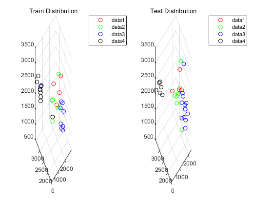

Contents
数据导入
data = readmatrix("../Data/BayesClassifierData.xlsx");
data(:, 4) = int16(data(: , 4));
n_samples = size(data, 1); n_train = 29; n_test = 59 - n_train;
train_X = data(1:n_train, 1:3);
train_y = data(1:n_train, 4);
test_X = data(n_train+1:n_train+n_test, 1:3);
pred_y = zeros(n_test, 1);
fis = readfis('FuzzyClustering.fis');
分类并绘图
for i = 1:n_test
input = test_X(i, :);
output = int16(round(evalfis(fis, input)));
pred_y(i) = output;
disp(['Input: ', num2str(input), ' --> ', ' Output: ', num2str(output)]);
end
res_visualization(train_X, train_y, test_X, pred_y)
function res_visualization(train_X, train_labels, test_X, pred_labels)
plot_styles = {'ro', 'go', 'bo', 'ko'};
classes = unique(train_labels);
num_classes = size(classes, 1);
subplot(1, 2, 1)
for i = 1:num_classes
class_samples = train_X(train_labels==classes(i), :);
plot3(class_samples(:, 1), class_samples(:, 2), class_samples(:, 3), plot_styles{i})
hold on;
end
grid on;
title('Train Distribution')
legend();
subplot(1, 2, 2)
for i = 1:num_classes
class_samples = test_X(pred_labels==classes(i), :);
if size(class_samples, 1) == 0
disp("绘制时该类没有样本"); disp(i);
continue;
end
plot3(class_samples(:, 1), class_samples(:, 2), class_samples(:, 3), plot_styles{i})
hold on;
end
grid on;
title('Test Distribution')
legend();
end
Input: 1702.8 1639.79 2068.74 --> Output: 3
Input: 1877.93 1860.96 1975.3 --> Output: 3
Input: 867.81 2334.68 2535.1 --> Output: 1
Input: 1831.49 1713.11 1604.65 --> Output: 3
Input: 460.69 3274.77 2172.99 --> Output: 4
Input: 2374.98 3346.98 975.31 --> Output: 2
Input: 2271.39 3482.97 946.7 --> Output: 2
Input: 1783.64 1597.99 2261.31 --> Output: 3
Input: 198.83 3250.45 2445.08 --> Output: 4
Input: 1494.63 2072.59 2550.51 --> Output: 2
Input: 1597.03 1921.52 2126.76 --> Output: 3
Input: 1598.93 1921.08 1623.33 --> Output: 3
Input: 1243.13 1814.07 3441.07 --> Output: 1
Input: 2336.31 2640.26 1599.63 --> Output: 3
Input: 354 3300.12 2373.61 --> Output: 4
Input: 2144.47 2501.62 591.51 --> Output: 2
Input: 426.31 3105.29 2057.8 --> Output: 4
Input: 1507.13 1556.89 1954.51 --> Output: 3
Input: 343.07 3271.72 2036.94 --> Output: 4
Input: 2201.94 3196.22 935.53 --> Output: 2
Input: 2232.43 3077.87 1298.87 --> Output: 2
Input: 1580.1 1752.07 2463.04 --> Output: 3
Input: 1962.4 1594.97 1835.95 --> Output: 3
Input: 1495.18 1957.44 3498.02 --> Output: 2
Input: 1245.27 1594.39 2937.73 --> Output: 1
Input: 24.22 3447.31 2145.01 --> Output: 4
Input: 1269.07 1910.72 2701.97 --> Output: 1
Input: 1802.07 1725.81 1966.35 --> Output: 3
Input: 1817.36 1927.4 3285.79 --> Output: 3
Input: 1860.45 1782.88 1278.13 --> Output: 3
